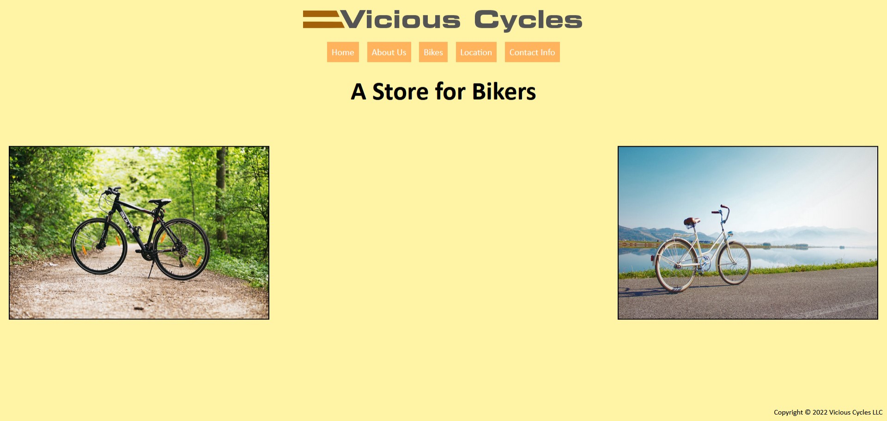

Matthew Klapchar
Student
I live in North Carolina and attend college at Wake Tech. My hope is to obtain an AAS in Web Design and find employment in that field. My pastimes include photographing/videoing trains and playing video games. I am a kind and caring person who is good at listening. I value teamwork and other's input. I have a lot to offer others and a company such as kindess, creativity, hard work, and a unique point-of-view on life.
Featured Project
Vicious Cycles
A website for the Vicious Cycles company. My role was coding and styling.
View WebpageEducation
Wake Technical Community College - Raleigh, NC
Web Design AAS, 2021
Currently taking classes needed to graduate, such as Graphic Design, Web Design, and PHP Programming.